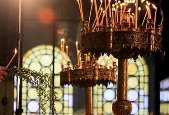
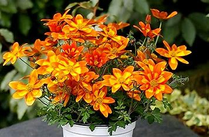
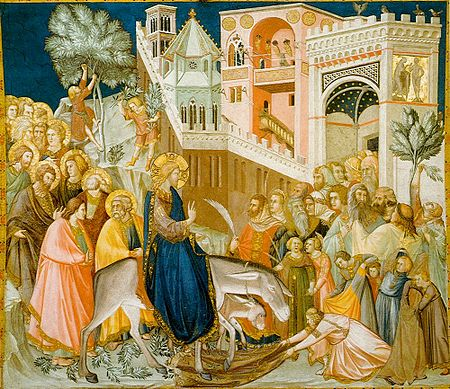
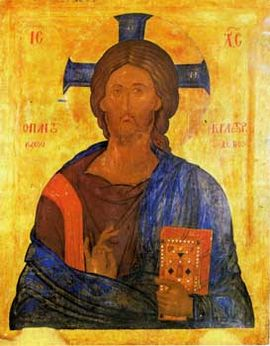

Цветница
За празника
Цветница е подвижен християнски, религиозен и народен празник, който се празнува както в православната,
така и в католическата и протестантската църква една седмица преди Великден, в неделята след Лазаровден.
Нарича се още Връбница, Цветна неделя, Вая (Вайя) (църк.), Куклинден (нар.), а в западните църкви Палмова неделя.
Пада се в шестата неделя на Великия пост.
Символ на празника са върбовите клонки.
Празникът е възлов момент в обредността на целия великденски празничен комплекс, чиито основи са в древни митологични представи и обичайни норми.


Религиозна страна на празница
На този ден християнската църква празнува влизането на Исус Христос в Йерусалим в дните преди еврейската Пасха. Според новозаветните евангелия Христос пристига в града, яздейки магаре, а вярващите го посрещат,
като разстилат пред него дрехите си и маслинови клонки.
След като възкресил престоялия четири дни в гроба Лазар, брат на сестрите Марта и Мария, Исус Христос тръгнал за Йерусалим.
Когато наближил града с придружаващите го ученици и стигнали до Витфагия, той пратил двама от тях да отидат в селото и да му доведат вързаната в началото на селото ослица и малкото ѝ,
а ако някой ги попита защо правят това, да кажат, че е потребно на Господ.


Имен ден празнуват:
Аблен(а) („аблена“ означава планински божур[4]; от името Аблена произлиза името Албена, което Йордан Йовков създава за благозвучие), Аглика, Ахинора (означава дъх на теменуга); името създава Николай Райнов за описание на свой персонаж (царица Ахинора, съпруга на хан Аспарух) в книгата си „Видения от древна България“
Бегония, Белян(а), Билян(а), Божур(а), Босилка, Босилко
Бор, Борян(а)
Венета, Венелин(а), Венец, Венцислав, Вероника, Виола, Виолета, Върба, Върбан(а), Върбин(ка)
Гергин(а), Гроздан(к)а
Далия, Дафина, Делян(а), Детелин(а), Диляна, Дилян, Дренка
Ели (от „ела“), Елица, Енчо, Еньо (от „еньовче“)
Жасмин(а)
Здравец, Здравка, Здравко, Зюмбюл(а)
Ива (име на върба), Иглика
Калина (име), Калия, Камелия, Карамфил(к)а, Кала, Калин, Китка
Лало, Лалка, Латин(ка), Лиана, Лила, Лили, Лилия, Лилян(а), Лоза(н), Лора (от лаврово дърво), Люляна
Магнолия, Малин(а), Маргарит(а), Минзухар(а), Мирта, Момина (от „момина сълза“)
Нева, Невен(а), Невян(а), Незабравка
Орхидея
Петуния, Пламен(а) (от „пламъче“)
Рали, Ралица, Ренета (от латински – „преродена“), Роза, Розалин(а), Розан(а), Роксана, Росиана, Росен, Росица, Росина, Росна, Ружа
Синчец, Сиян(а), Смилян(а), Смирна, Стефан/и(я) (от гръцки – „венец“)
Теменуга, Теменужка, Трендафил(ка)
Фидан(ка)
Цвета, Цветан(а), Цветанка, Цвете, Цветелин(а), Цветин(а), Цветка, Цветомир(а), Цветослав(а), Цвятко, Цветимир, Цветомила.
Явор(а), Ясен(а), Ясмин(а)